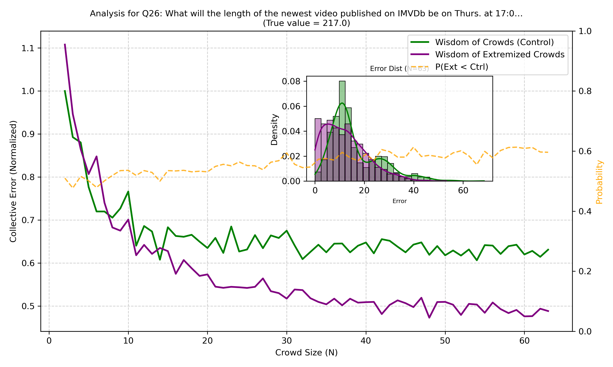
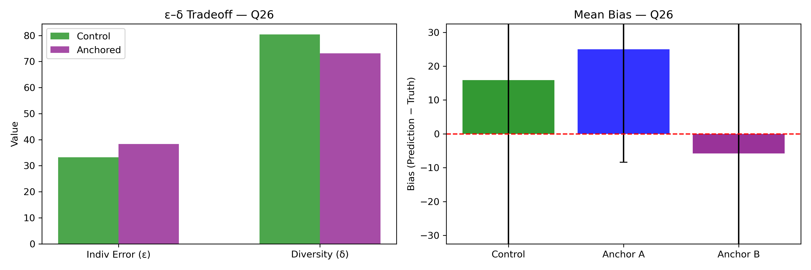
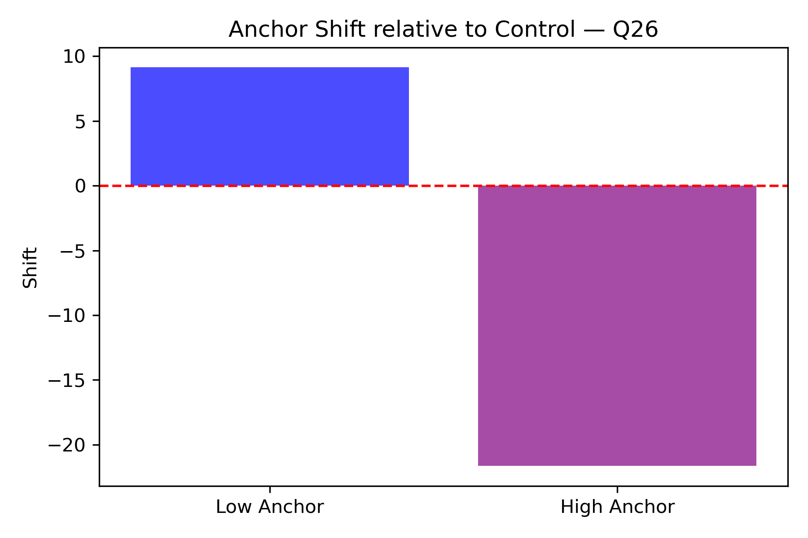
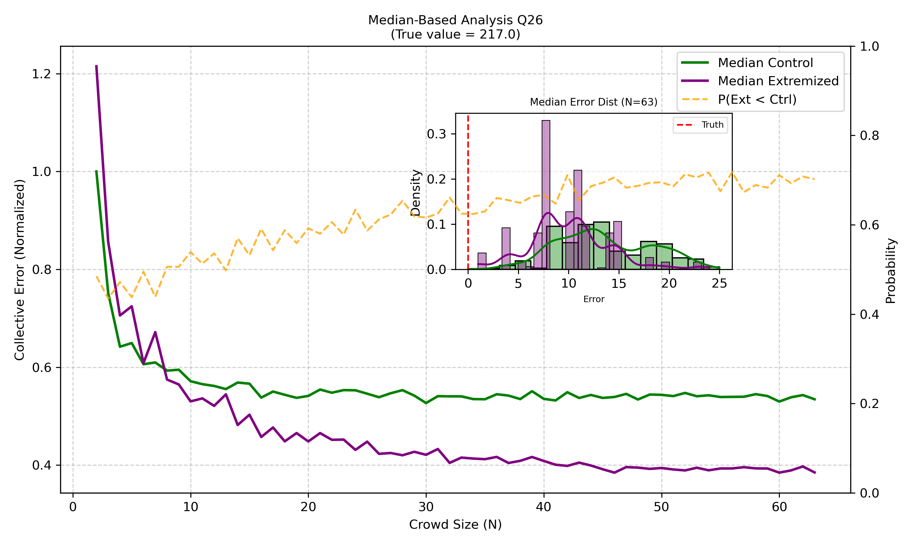
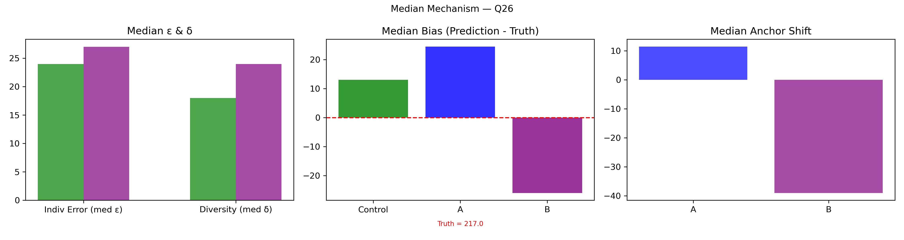

Q26
What will the length of the newest video published on IMVDb be on Thurs. at 17:00 ET?
📋 Question Details
| Truth (θ) | 217.0 |
| Low Anchor | 151.0 |
| High Anchor | 270.0 |
📈 DPT Analysis Summary
✓ Yes
Extremization Improved
δ↓ ε↓ E↓
Mechanism
Low
Best Condition
E_control = 251.8876 → E_extremized = 139.4649
📋 Full Super Summary (click to expand)
================================================================================ QUESTION Q26: 04_Export_0703_stats_lyyYepGtKV.csv What will the length of the newest video published on IMVDb be on Thurs. at 17:00 ET? Truth = 217.0 N_ctrl = 186 N_ext = 63 ================================================================================ [1] MEAN-BASED COLLECTIVE ERROR Ec=15.9221 ± 10.1299, CI=[3.0607,41.7087] Ex=12.2028 ± 8.8024, CI=[0.4599,32.9238] Percent Change = -23.36% Bootstrap P(Ext<Ctrl) = 0.6030 t-test(E): t=8.764, p=0.000000 (SIGNIFICANT (p < .05)) [2] MEAN INDIVIDUAL ERROR (ε) ε_ctrl=33.2688, ε_ext=38.4444 Percent Change = 15.56% Welch t-test p = 0.5963 [3] MEAN DIVERSITY (δ) δ_ctrl=80.4357, δ_ext=73.1194 Percent Change = -9.10% Levene p = 0.5292 [4] ANCHOR DIAGNOSTICS Anchors: A=270.0, B=151.0 Effective: A=False, B=False [5] EQUATION 6 CHECK w_L=0.2644, w_H=0.2459, Δ=124.4054 Criterion_L=None, Criterion_H=None Meets both = True [6] MEAN δ–ε–E SCENARIO Scenario: δ:down, ε:up, E:down Mechanism Explanation: Accidental correction: one anchor lies nearer truth (217.0), so collective error decreases despite increased ε. ================================================================================ INTERPRETATION — MEAN AGGREGATION ================================================================================ Mean-based collective error changed by -23.36% relative to the true value 217.0. Scenario=δ:down, ε:up, E:down. Equation 6 feasibility=True. ================================================================================ [7] MEDIAN AGGREGATION SUMMARY Median E: 13.0000 → 10.0000 (-23.08%) Median ε: 24.0000 → 27.0000 (12.50%) Median δ: 18.0000 → 24.0000 (33.33%) Median Scenario: δ:up, ε:up, E:down Mean vs Median: Median agrees with mean. Interpretation: Median indicates anchors moved predictions closer to the true value (217.0). Median t-test p-value = 0.000000 (SIGNIFICANT (p < .05)) [8] MEAN vs MEDIAN — NUMERICAL COMPARISON Mean Scenario: δ:down, ε:up, E:down Median Scenario: δ:up, ε:up, E:down Conclusion: Anchoring effects are consistent across distribution center and tails relative to truth = 217.0. ================================================================================
📊 Mean-Based Barrera Analysis
Distribution comparison showing Control vs Low Anchor vs High Anchor conditions with error analysis using mean estimates. This replicates the B-L methodology.

🔬 Mechanism Analysis
Decomposition of collective error into individual error (ε) and diversity (δ).
Main Mechanism (ε-δ Decomposition)

Anchor Shift Analysis

📈 Median-Based Analysis
Robustness check using median estimates (less sensitive to outliers).
Median Distribution Analysis

Median Mechanism Analysis
